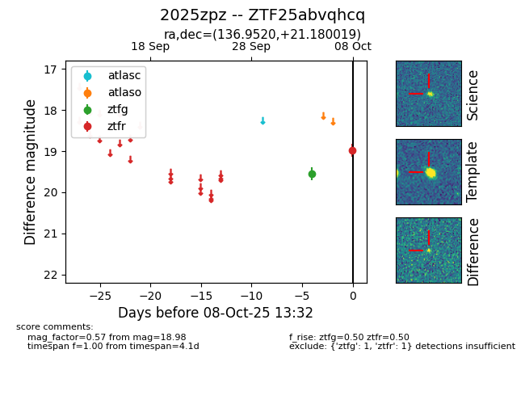

FINK: ZTF25abvqhcq
Lasair: ZTF25abvqhcq
ALeRCE: ZTF25abvqhcq
TNS: 2025zpz
YSE: 2025zpz
ZTF25abvqhcq (ztf,fink)
2025zpz (tns,yse)
equatorial (ra, dec) = (136.9520,+21.18002)
galactic (l, b) = (206.7805,+39.04380)

last ztfg=19.56, ztfr=18.98
1 ztfg, 1 ztfr detections